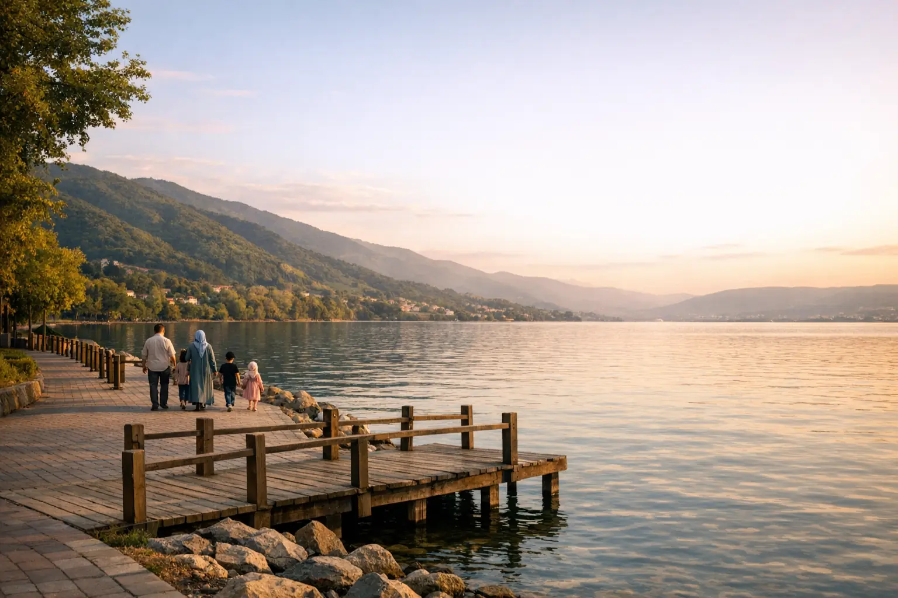

Программа по Стамбулу, Сапандже и Бурсе, 8 дней
Три направления в одной поездке: достопримечательности Стамбула, затем две ночи между озером Сапанджа и лесами Машукие и ночь в Бурсе с горой Улудаг.
ЦенаВ зависимости от сезона — запросите предложение

Путеводитель • Sapanca
Сапанджа — ближайший к Стамбулу уголок природы: широкое озеро, густые леса, водопады Машукие и бунгало с частными бассейнами примерно в двух часах пути.
Почему Сапанджа?
Сапанджа — тихий городок в провинции Сакарья к востоку от Стамбула, раскинувшийся вдоль широкого пресноводного озера, окружённого покрытыми лесом горами Саманлы. До Стамбула около 140 км, примерно два часа на машине в обычных условиях, поэтому это любимое место для однодневных поездок и отдыха на выходные. Атмосфера здесь совсем не похожа на городскую суету: чистый воздух, зелень со всех сторон, рестораны и кафе с видом на воду. Это одно из самых востребованных у семей мест рядом со Стамбулом.
Недалеко от озера находится деревня Машукие (Maşukiye) района Картепе провинции Коджаэли, известная небольшими водопадами и рыбными ресторанами и ресторанами-гриль вдоль ручьёв. Оттуда можно подняться на возвышенности Картепе с лесами, смотровыми площадками и горнолыжным курортом зимой. Типичная поездка объединяет озеро, Машукие и Картепе за один день, с обедом на берегу ручья среди деревьев. По дороге вы остановитесь у смотровых площадок с видом на озеро и в магазинчиках с деревенскими продуктами — мёдом, вареньем и сырами.
Главная особенность Сапанджи — бунгало и деревянные шале с частными бассейнами или джакузи среди деревьев, вдали от посторонних глаз; это любимый выбор семей и молодожёнов. Активный отдых — квадроциклы, зиплайн и прогулки на лодке по озеру — добавляет веселья молодёжи и детям. Бунгало бывают разные: от небольших на двоих до просторных с несколькими комнатами, а в некоторых есть подогреваемые бассейны, подходящие для зимы.
Вы можете съездить в Сапанджу на один день из Стамбула или остаться на ночь-две и насладиться вечерним спокойствием озера. Мы включаем её в программу «Стамбул, Сапанджа и Бурса, 8 дней» с русскоговорящим водителем и помогаем выбрать бунгало, подходящее по размеру вашей семьи. Осенью леса окрашиваются в жёлтый и оранжевый цвета, а зимой снег может покрыть возвышенности Картепе, так что у каждого времени года в Сапандже свой характер.

Главные достопримечательности
Тщательно подобранный список того, что стоит вашего времени в Сапандже, с продуманным порядком посещений в наших программах.
Пресноводное озеро длиной около 16 км, окружённое зелёными холмами, ресторанами и кафе; на закате его вода переливается золотыми оттенками.
Пешеходные дорожки, места для отдыха и прогулка по берегу в черте города — подходит для вечерней семейной прогулки или катания на велосипеде.
Горная деревня среди деревьев и ручьёв, известная небольшими водопадами, ресторанами с видом на воду и магазинами деревенских продуктов.
Самый известный обед в этих местах: форель на гриле или мясо на гриле за столиками над водой или рядом с ней среди зелени.
Поднимает вас из окрестностей Машукие на возвышенности Картепе и открывает широкий вид на озеро и леса сверху.
Зимой вершины Картепе превращаются в горнолыжный курорт недалеко от Стамбула, подходящий для первого знакомства детей со снегом.
Большой природный парк в Картепе с пешеходными тропами среди деревьев и зонами знакомства с животными, подходит для спокойной семейной прогулки.
Квадроциклы (ATV) на лесных трассах, зиплайн, верховая езда и прогулки на лодке по озеру; обычно бронируются на месте за отдельную плату.
Небольшое озеро, окружённое лесом, возле Адапазары, примерно в получасе пути; идеальное место для прогулки вдали от толп.
Деревянные шале среди деревьев с частными бассейнами или джакузи, дающие полное уединение семьям и парам, — одна из главных причин славы Сапанджи.
Готовые программы
Программы по дням, которые можно полностью изменить под ваше число дней и бюджет.
Три направления в одной поездке: достопримечательности Стамбула, затем две ночи между озером Сапанджа и лесами Машукие и ночь в Бурсе с горой Улудаг.

Пять спокойных дней в Стамбуле: старый город, Босфор между двумя континентами и однодневная поездка к озеру Сапанджа и в Машукие, с подобранным отелем и русскоговорящим водителем.

Семейная поездка в спокойном ритме: достопримечательности Стамбула и места для детей, две ночи в бунгало в Сапандже, затем Трабзон и Узунгёль среди озёр и конных ферм.
Экскурсии на день
Где остановиться?
Отели Сапанджи: районы и варианты
Мы также организуем для вас трансфер из аэропорта и частного русскоговорящего водителя.
Советы OYA
Создайте свою поездку
Заполните форму, и мы пришлём в WhatsApp предлагаемую программу с вариантами отелей и трансферов.
Вопросы и ответы
Около 140 км к востоку от Стамбула, примерно два часа на машине в обычных условиях. В часы пик и по выходным поездка может занять больше времени.
Однодневной поездки хватит для озера и Машукие, но ночь в бунгало с частным бассейном подарит вам спокойный вечер и утро на озере — это совсем не то же, что один день в гостях.
Сапанджа — это городок на берегу озера в провинции Сакарья, а Машукие — ближайшая горная деревня, относящаяся к району Картепе в провинции Коджаэли, известная водопадами и рыбными ресторанами. Обычно одна поездка охватывает оба места.
Лучший вариант зависит от размера семьи, бюджета и дат: есть небольшие бунгало для пар и многокомнатные для семей, а некоторые с подогреваемым бассейном подходят и для зимы. Пришлите нам в WhatsApp даты и число гостей, и мы предложим варианты, которые действительно доступны.
Да, особенно если вы хотите снега недалеко от Стамбула: возвышенности Картепе превращаются в горнолыжный курорт, а бунгало с джакузи или подогреваемым бассейном делают отдых тёплым и приятным.
Очень подходит: просторные зелёные зоны, безопасная набережная озера, такие занятия, как верховая езда и лодки, и природные парки. Только внимательно следите за детьми у частных бассейнов бунгало.
Из гида OYA

Практическое руководство по самым популярным однодневным поездкам из Стамбула: Сапанджа и Машукие, Бурса и Улудаг, Принцевы острова, Шиле и Агва, со сравнительной таблицей и советами, как выбрать между поездкой на день и ночёвкой.

В Турции разный климат, поэтому то, что подходит Стамбулу, может не подойти Анталье или Узунгёлю в том же месяце. Гид по месяцам поможет выбрать и время, и направление.

Сбалансированная семейная программа на десять дней в Турции, сочетающая город и природу, снег или озёра, с идеями занятий для детей и практическими советами по проживанию и передвижению с малышами.
Узнать больше

Город двух континентов и магия Босфора

Ворота зелёного черноморского побережья Турции

Озеро среди облаков и лесов

Первая столица Османов и снежная гора

Солнце, море и горы на Средиземноморье

Воздушные шары на рассвете над сказочными трубами

Эгейские бухты и яхтенные марины
Личный сервис от начала до конца
Расскажите нам о направлении, датах и количестве путешественников — и вскоре вы получите подробное предложение без каких-либо обязательств.